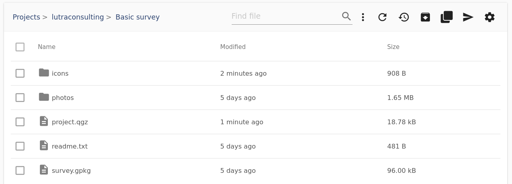
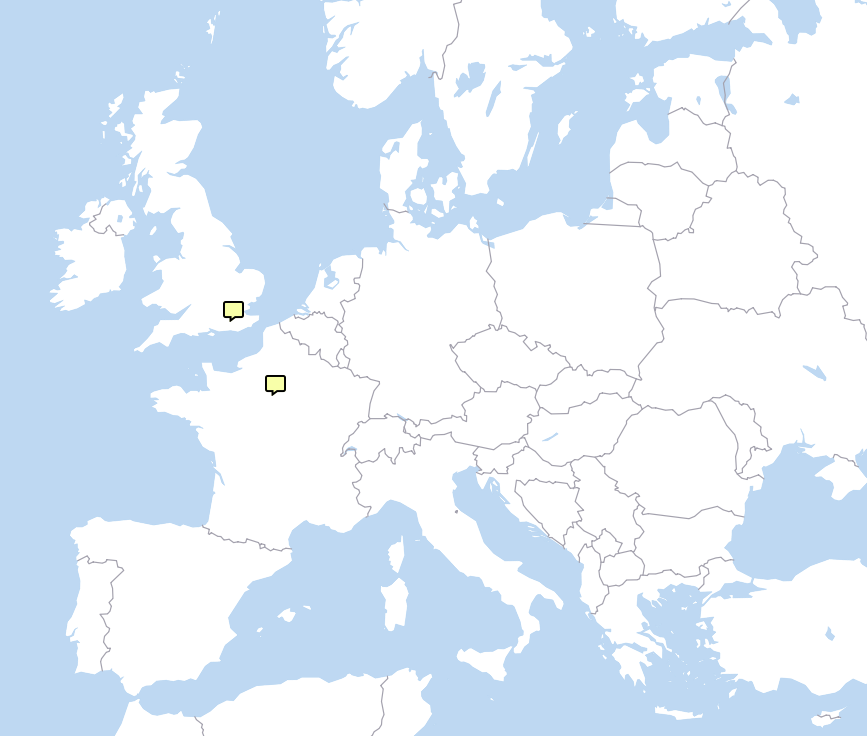
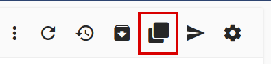
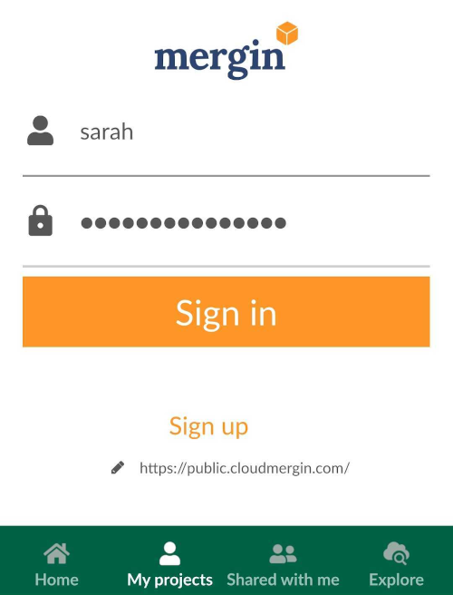
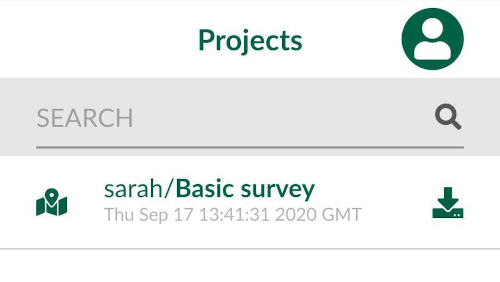
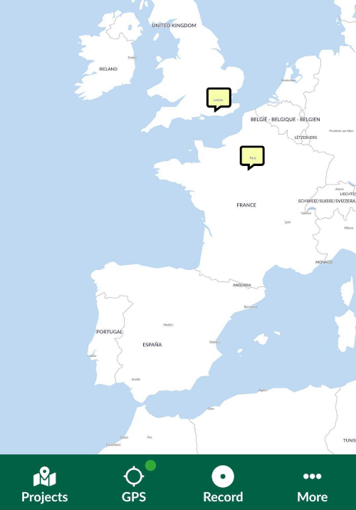
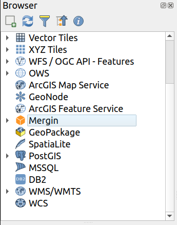
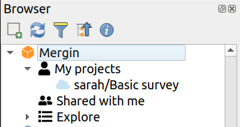
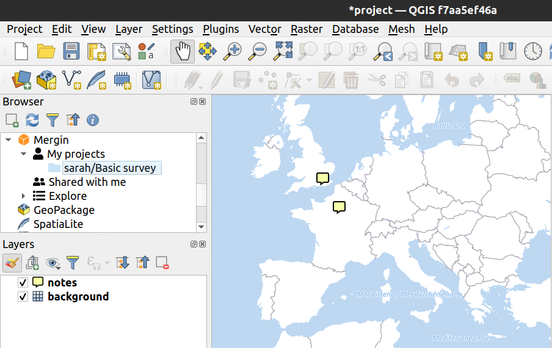

Quick Start
It is easy to start using Mergin - let’s head to https://public.cloudmergin.com/
Sign up
First, you will need an account. Signing up is free: you just need to enter your email address and pick your username and password.
Next, check your email - you will get a mail with activation link for your account. After you click the link to confirm your email address, you are ready to log in.
Note: One can view and download public projects even without an account, but creation of projects and synchronization of geo-data only works when you are logged in.
Explore Mergin service
All data in Mergin are stored in projects. A project normally contains a QGIS project file and geo-data linked from it (such as GeoPackage and/or GeoTIFF files). It may contain also extra media files (such as pictures) or any other data files you need.
Setting up a project can take a bit of time, so for this introduction we will start from an existing project and we will show how to set up your own project later.
Head to lutraconsulting / Basic survey project in Mergin. This a very simple project with a background map and a point layer for notes. When you open the link above, the project page will come up with a list of files within the project:

You can see there is a QGIS project file (project.qgz), a GeoPackage with the survey layer (survey.gpkg) and a few more files. When loaded in QGIS, the project looks like this:

(The map uses online vector tiles for background mapping, all styling is configured in project.qgz file.)
If we wanted to do any modifications to the project, we won’t be able to upload the changes back to the cloud because we do not have write permissions to the project. We can however create our own copy of the project: one of the buttons in the project page will clone the project:

Click the button, pick a project name (it can stay the same - “Basic survey”), select your user name as the namespace and finally click the Clone button. In a few seconds, your project is ready! Now you are owner of the project and thus you can modify it.
Now let’s see how we can use the project in QGIS and in the Input app.
Using your project in Input app (Android / iPhone / iPad)
The Input mobile app allows you to view your projects on Android devices or iPhone/iPad. It comes with a simple easy to use user interface and it features seamless integration with Mergin service. You can find the app in the app store of your platform:
Once installed, open the app, open Projects, tap My Projects button and log in using your Mergin username and password.

You will get your projects listed, with a button to download the project to your phone/tablet.

After tapping the download icon, in few moments the project will be available and you can switch back to Home tab and open the project.

Using your project in QGIS (Windows / macOS / Linux)
Working with Mergin projects in QGIS is easy - you only need to install Mergin plugin - just like any other plugin for QGIS:
- Go to Plugins menu > Manage and Install Plugins…
- Search for Mergin and click Install Plugin button
The plugin integrates into the Browser panel in QGIS:

Note: if Browser panel is not open in your session, go to menu View > Panels > Browser to open it.
Find Mergin item in the Browser, right click it and select Configure. Fill in your username and password and click OK. Now you can see your projects in the Browser!

Next, you can right click on a project and select Download. The plugin will ask where to download the project and it will start downloading. After a few moments, it will ask whether to open QGIS project file inside the Mergin project you have just downloaded - if you click Yes, you are ready to use your project:
